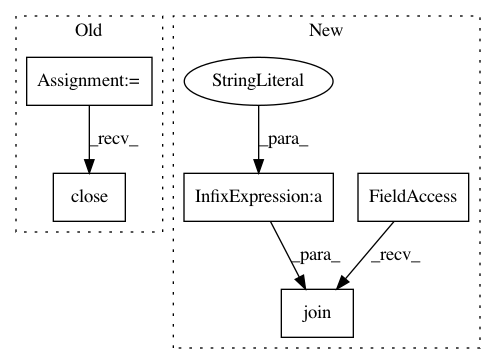

5ca403cee17ee1e2a704e03bf06d47f2ce9ba222,examples/audio.py,,,#,33
Before Change
x = st.text("Making wave...")
sine_wave = note(frequency, duration, amplitude, sampling_rate)
f = wave.open("sound.wav", "w")
f.setparams((nchannels, sampwidth, int(sampling_rate), nframes, comptype, compname))
x.text("Converting wave...")
f.writeframes(sine_wave)
f.close()
with io.open("sound.wav", "rb") as f:
x.text("Sending wave...")
x.audio(f)
After Change
else:
filename = st.selectbox(
"Select an audio file from your home directory (%s) to play" % avdir,
audiofiles,
0,
)
audiopath = os.path.join(avdir, filename)
st.audio(audiopath)
st.header("Generated audio (440Hz sine wave)")
In pattern: SUPERPATTERN
Frequency: 3
Non-data size: 5
Instances
Project Name: streamlit/streamlit
Commit Name: 5ca403cee17ee1e2a704e03bf06d47f2ce9ba222
Time: 2020-02-06
Author: naomi@nthmost.com
File Name: examples/audio.py
Class Name:
Method Name:
Project Name: facebookresearch/ParlAI
Commit Name: 9fc989afc19ec56ccbf0b7b966d34bfdd254c651
Time: 2017-05-06
Author: ahm@fb.com
File Name: parlai/tasks/qadailymail/build.py
Class Name:
Method Name: create_fb_format
Project Name: facebookresearch/ParlAI
Commit Name: 9fc989afc19ec56ccbf0b7b966d34bfdd254c651
Time: 2017-05-06
Author: ahm@fb.com
File Name: parlai/tasks/qacnn/build.py
Class Name:
Method Name: create_fb_format